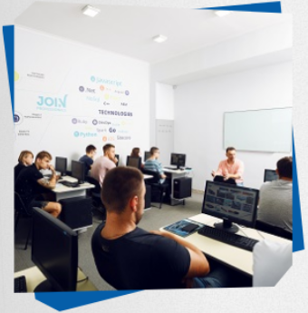
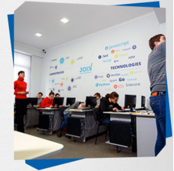

Для кого розроблена програма
Школярі та випускники (15-18 років)
отримають першу професію, не відкладаючи на потім свою мрію стати програмістом
Студенти ВНЗ (18-23 роки)
освоять другу спеціальність паравевьно з університетською освітою
Представники інших професій (23-55 років)
яких не влаштовує поточна кар'єрна і фінансова перспектива, зможуть перевчитися на розробника ПЗ і отримати затребувану професію
Всі бажаючі підвищити ІТ-кваліфікацію
систематизують свої знання і отримають робочі навички, затребувані сучасному ІТ
Як проходить навчання

